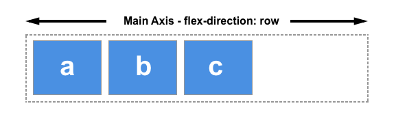
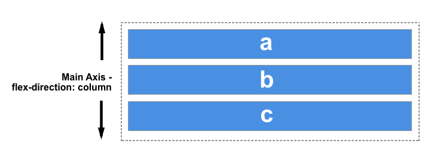

Pagrindinė ašis
Pagrindinė ašis apibrėžiama flex-direction, kuri turi keturias galimas reikšmes:
- row
- row-reverse
- column
- column-reverse
Jei pasirinksite row arba row-reverse, pagrindinė ašis eis išilgai eilutės paklusdama inline-direction savybei.
Pasirinkite column arba column-reverse ir jūsų pagrindinė ašis veiks nuo puslapio viršaus iki apačios paklusdama inline-block savybei.
